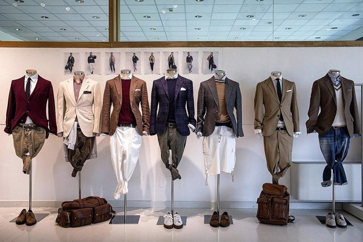

Satorial Phong cách của sự trưởng trành |
|
|  | Sartorial được định nghĩa là phong cách thời trang liên kết với những món đồ may đo, chuẩn xác (bespoke). Phong cách sartorial ngày nay được sử dụng để chỉ cách mặc đồ hơi hướng cổ điển, với vest, suit, áo khoác, giày âu. Đây là những thiết kế hỏi cao về tay nghề và thẩm mỹ từ người có thể và người mặc định. |